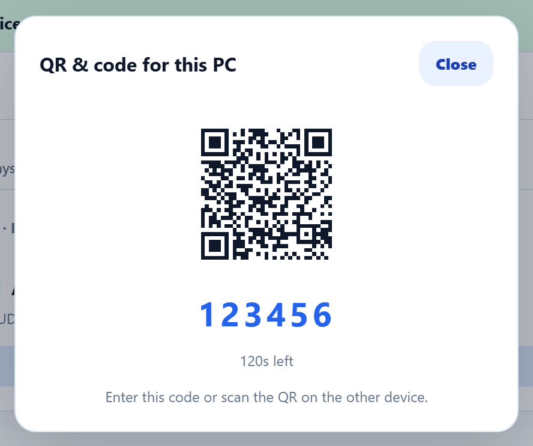
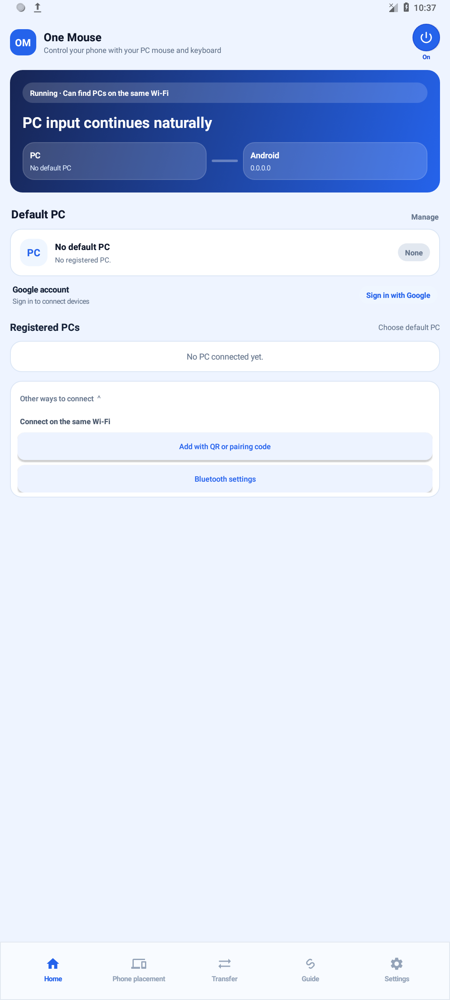
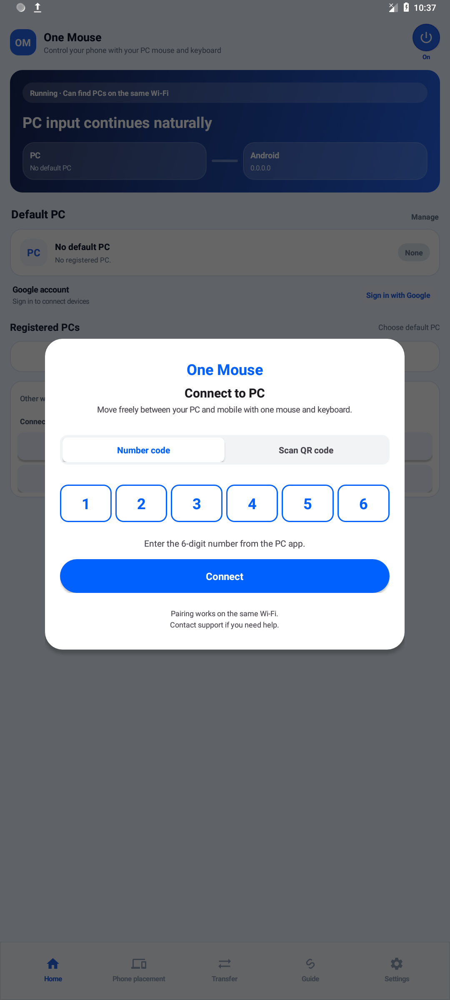
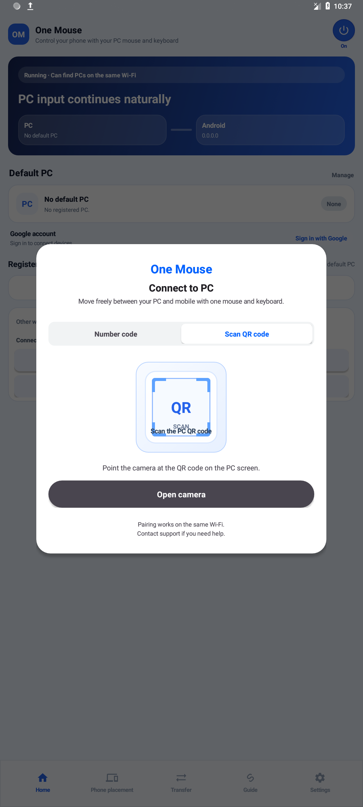
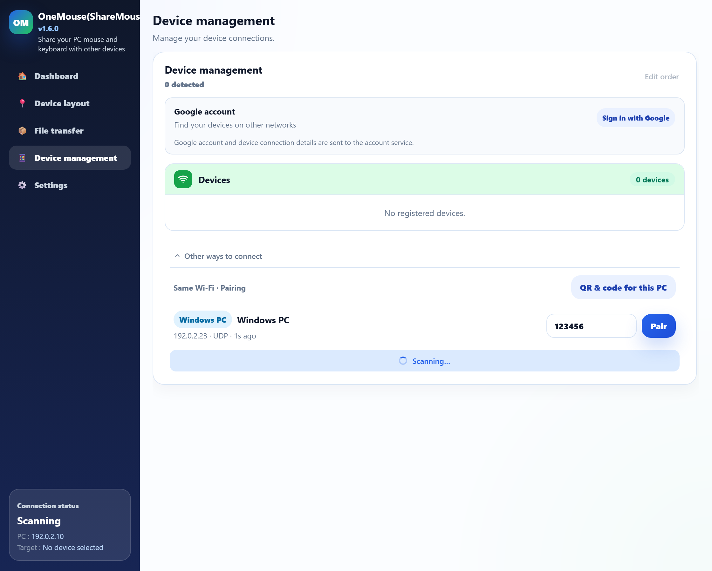
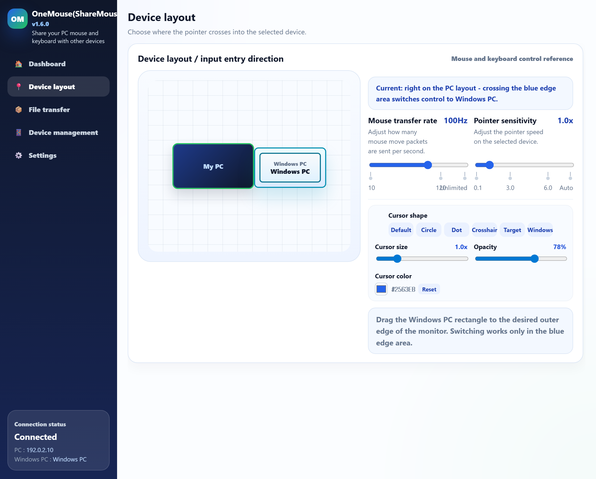

1. Move the cursor
Slide one finger to move the pointer. Lift and reposition your finger to keep moving.
Guide
Most people only need to follow this order. For the harder networking details see Technical & Security, and when something isn't working, check Help separately.
Android setup
Choose a Google account, QR/code pairing on the same Wi-Fi, or Bluetooth. All three methods need Android Accessibility to control your phone with the PC mouse and keyboard.
Find your internet-connected devices in the account list. No QR or pairing code is needed.
Internet access is required. Whether devices can connect depends on the network. Choose Wi-Fi or Bluetooth to use OneMouse without signing in.
Device missing from your account or unable to connect? →No Google sign-in is needed. The PC can use wired LAN as long as it is connected to the same router as the phone.
Run OneMouse on both devices. Open Devices in the PC app.
Enable the service under Android Settings → Accessibility → Installed apps (or Downloaded apps) → OneMouse. Menu names vary by manufacturer. Also check permissions needed for discovery, such as Nearby Wi-Fi devices.
In Devices, expand Other ways to connect and choose QR & code for this PC. This dialog shows the QR and six-digit code.
Choose Home → Other ways to connect → Add with QR or pairing code. Enter the six digits in Number code and choose Connect, or use Scan QR code → Open camera to scan the PC’s QR. Choose one method.
Confirm that the PC appears under Registered PCs on the phone’s home screen. Already registered devices do not need this authentication every time.
Match Phone placement to the phone’s actual position, then move the mouse through the configured cursor entry passage on that edge. If the passage is narrow, try the middle of the edge first.




Actual app screens captured with example devices and codes. Use the code or QR shown in your own PC app when connecting. Select an image to view it at full size.
These steps are for Windows ↔ Android. Bluetooth does not carry remote video. To view the PC screen on your phone, use Wi-Fi/LAN or a supported account connection.
Bluetooth settings and detailed steps →Input permission: Android Settings → Accessibility → Installed apps (or Downloaded apps) → OneMouse. Connected, but the mouse will not cross? →
Phone position
Drag each device to its real position in the arrangement screen. Cross through the configured cursor entry passage on the corresponding edge. The passage may cover only part of that edge.
Remote control
In Devices, tap the remote control icon on the row of a paired Android, and a separate window opens showing the phone's screen. The first time you open it, Android screen capture approval is required.
Open a window from its remote control icon in Devices or with the default Ctrl+Alt+Shift+1~9. Right-button dragging works with gesture extensions configured in the target PC's browser, separately from Android gestures.


Android → Windows
See your PC screen, click by touch, move the cursor and type with your phone's keyboard. Both the PC and Android need up-to-date apps that support this feature.

Choose image quality and the maximum frame rate in the control panel. A PC that supports live quality changes applies them without reconnecting. Actual resolution and frame rate depend on device performance and network conditions.
To finish, use Control panel → Disconnect. Disconnecting remote control leaves the PC running. Bluetooth connections do not carry remote video.
These explanatory animations show the basics of cursor mode. They are not recordings of the app.
Slide one finger to move the pointer. Lift and reposition your finger to keep moving.
Move the pointer over a button, then tap once. The click happens at the pointer, not at your finger.
Place the pointer on a title bar or item and hold your finger still until the pointer turns blue. Move your finger to drag, then lift it to drop the item.
At 1×, slide two fingers together to scroll the PC. Spread two fingers to zoom in; once zoomed in, move them together to pan the view.
Android mouse gestures
How to enable gestures, the seven stroke patterns, and support limits.
In Settings → Typing & clipboard, turn on Mouse gestures and choose the apps (off by default). Both PC and Android need a gesture-capable version.
Select All apps to use gestures in apps and on the home screen. Check the support limits
Move the PC pointer onto the Android phone or tablet and open a selected app.
The arrow and vertical gauge show direction and scroll intensity based on stroke length, not your position on the page or an exact distance.
| Gesture | Action |
|---|---|
| ← | BackDraw left to return to the previous page or screen. |
| → | ForwardDraw right to return to a page after going back. |
| ↑ | Scroll upDraw up and release. Longer strokes scroll more; shorter strokes scroll less. |
| ↓ | Scroll downDraw down and release. Longer strokes scroll more; shorter strokes scroll less. |
| ↓ → | Minimize appGo to Home without closing the app. |
| ↑ ↓ | ReloadRefresh the page in a supported browser. |
| ↑ → | Recent appsOpen the recent-app list to choose another app. |
Files & clipboard

Capture & send screenshots
Capture your own PC or the device you are currently controlling. Copy or save the result from the preview, or send it to a connected device's clipboard.
If you changed the shortcut, use your configured keys. While selecting a region, Esc or Cancel closes the selection without sending an image.

Mobile to PC
For LAN transfers, choose the default PC on the mobile app's home screen and check that it is paired and connected. Send files from the transfer tab or Android's share menu, and send text through OneMouse to PC in the selection menu.
In PC Settings → General → File transfer → Received file location, use Change folder to choose the destination and Open folder to view it. This is available on both main and sub PCs.


Notifications & replies
In the Android app, enable Send notifications to PC, allow notification access, and select the apps to relay. On the main PC, enable device notifications in Settings → Notifications.
The same screen shows history and retention settings. More about notifications
Reply appears when PC and Android support replies and the original phone notification offers a free-text reply. Type your reply and choose Send or Ctrl+Enter to send through the original phone app (Enter adds a line break).
Number shortcuts
With at least two LAN devices on the main PC, choose Devices → Edit order. Drag the handle or use ↑/↓; changes save automatically, then choose Done. Connection and remote-window shortcut numbers follow the same order.
Bluetooth
Windows↔Android and Windows↔Windows can exchange input, clipboard, and files directly over Bluetooth.

Another PC


Mac · Public support
Install the public DMG on the Mac, then start and manage the LAN connection from OneMouse on Windows. Follow these five steps.
Run OneMouse on Windows 10/11 and on the Mac, with both computers connected to the same Wi-Fi or LAN. Connections are started and managed from Windows.
Allow Accessibility so the Mac can perform received mouse and keyboard input. On macOS 15+, also allow Local Network for discovery; macOS 13/14 may not show this item.
Open Devices in the Windows app and select the detected Mac.
Enter in Windows the 6-digit pairing code displayed by the Mac, then confirm the pairing.
Place the Mac beside the Windows display in the arrangement editor. Move the cursor across that edge to control it and exchange files and clipboard content in both directions.
Screen & System Audio Recording permission is needed only when you choose to view or control the Mac's display from Windows. OneMouse does not capture system audio.
Mac Bluetooth is available as a beta: enable it in the Mac app settings (off by default). LAN remains the officially supported path, and screen or window sharing is LAN-only.
Permissions
Android input needs Accessibility Service; Mac input needs Accessibility. Viewing an Android or Mac remote screen also requires screen capture or recording approval.
These PC shortcuts are defaults. In PC Settings → Shortcuts, you can change each combination, turn individual actions off, or disable all shortcuts. Use your saved combination if you have changed it.
| Default shortcut | Action and conditions |
|---|---|
| Ctrl+Alt+1~9 | Main PC: connect input control to the matching device in the list. Press the same number again to release the device you are currently controlling. |
| Ctrl+Alt+Shift+1~9 | Main PC: open the matching remote window or bring an existing window forward. Pressing it again does not close the window. It uses the same LAN device numbers as connection shortcuts; Bluetooth devices are excluded from numbering. |
| Ctrl+Alt+D | Show / hide the Quick Drop zone. |
| Ctrl+Alt+S | Select an area on the Windows PC, Mac, or Android device you are controlling and receive it on the main PC. With no remote device under control, capture this PC. Both apps must support the feature, and the target needs capture permission. |
| Ctrl+Alt+V | Main PC: copy a verification code while its phone notification is visible on the PC. Enable phone notification relay first. |
| Ctrl+V | Receive and paste shared files copied on another PC. With no shared files waiting, ordinary paste remains available. |
| Ctrl+Alt+Backspace | Main PC: immediately return the cursor to the center of your own monitor while controlling another device. |
These are input combinations sent to Android, separate from the PC app shortcut settings above. Text editing depends on support in the target app and text field.
| Default shortcut | Action and conditions |
|---|---|
| PrintScreen | Android 11+: capture the phone screen during direct control and send it to the PC. Accessibility permission is required. |
| Alt+Shift+↑ / Alt+Shift+↓ | Raise / lower Android screen brightness. Requires permission to modify system settings. |
| Alt+↑ / Alt+↓ | Raise / lower Android media volume. |
| Alt+Tab / Alt+Shift+Tab | Switch recent apps / cycle in reverse. Release Alt to enter the selected app. |
| Ctrl+A / Ctrl+C / Ctrl+X / Ctrl+V | Select all / copy / cut / paste in a supported text field. |
| Ctrl+Insert / Shift+Insert / Shift+Delete | Copy / paste / cut in a supported text field. |
| Ctrl+Z | Undo in apps and text fields that support it. |
The default Windows shortcut mapping sends Ctrl as Command and Alt as Option. You can switch to native Mac modifier mapping in the Mac app keyboard settings. This does not mean replacing Ctrl with Command in the Windows app shortcuts above.